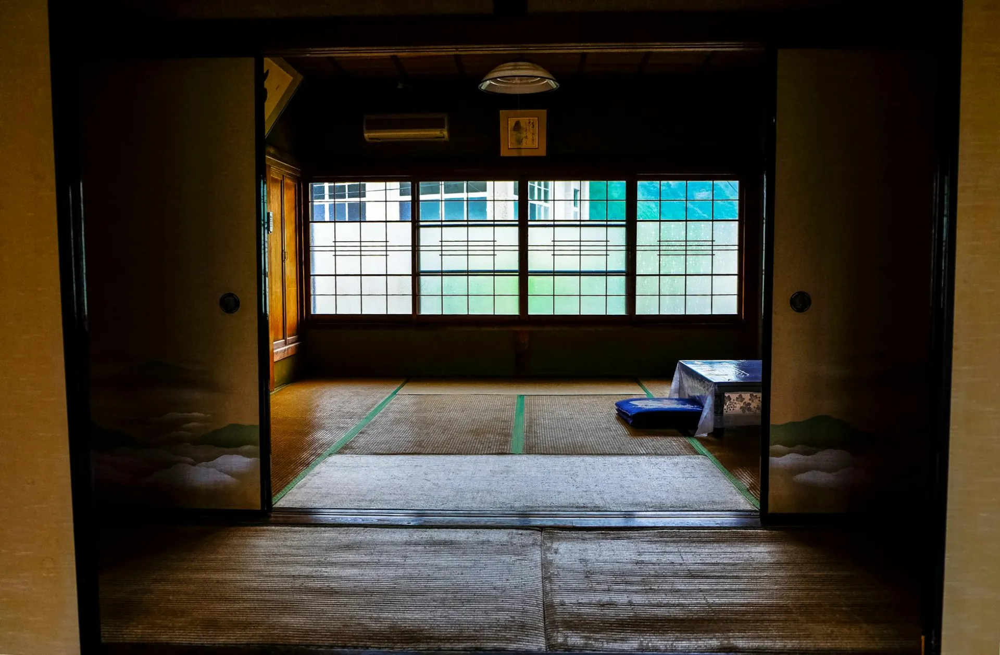
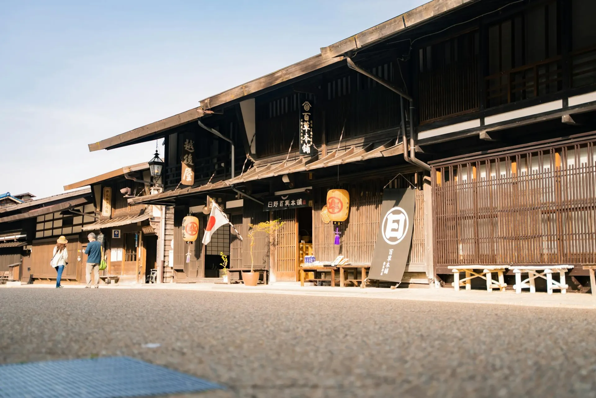

The Gate Ceremony
Your nakai — a personal attendant assigned for the full duration of your stay — meets you at the garden gate with a cold or warm damp tenugui cloth and a bowl of seasonal wagashi sweets chosen to reflect that morning's kitchen harvest. You remove your shoes, leave the outside world on the stone step, and enter.
Check-in begins with whispered introductions, a room tour, and a private instruction in the property's rhythms — meal times, bath reservation windows, the unlocked garden gate that leads to the upper bamboo path. No paperwork until you choose to attend to it.

Yukata Dressing
Your nakai will assist you into your yukata — a hand-dyed cotton robe selected from Kuretake's collection of over forty garments, each produced by a Kyoto dyehouse using natural plant pigments. The dressing itself is a quiet ceremony: the correct fold, the obi tied at the precise angle, the fit adjusted for your height and bearing.
Wearing the yukata is not a costume; it is a signal to your own nervous system that a different pace has begun. Guests wear it from bath to banquet, from garden walk to evening meditation.

Onsen Immersion
Your private bath — rotenburo, hinoki-buro, or kazoku-buro — is drawn to 41°C and awaits at your chosen hour. The water, piped from the geothermal spring on the mountain's north face, carries sodium bicarbonate and sulfate minerals that soften the skin and dissolve muscular tension with a thoroughness that no massage can replicate.
The Japanese practice is to wash thoroughly outside the tub, then enter the mineral water purely to soak — to be held rather than cleansed. Guests typically spend forty minutes to an hour. Time bends in a private onsen. This is its gift.

Kaiseki Dinner
The kaiseki meal at Kuretake is served in your room beginning at 18:00 or 19:00 — your preference set at arrival. Twelve courses, each presented on hand-thrown ceramic by Kyoto potter Soji Takeda, who has supplied Kuretake's dining vessels since 2009. Every dish announces its season: spring's bamboo shoot tempura, summer's ayu sweetfish, autumn's matsutake pine mushroom, winter's charcoal-grilled root vegetables.
Our head chef, Yosuke Kimura, changes the menu entirely with each new moon cycle — twenty-six menu rotations per year, none repeated. The sake pairing is curated from small-batch Kyoto breweries, selected monthly by Keiko Yamamoto herself.

The Morning Ritual
Guests who wish to join the optional dawn meditation gather on the upper garden terrace at 6:15, guided by Kuretake's resident practice teacher. Thirty minutes of seated silence in the bamboo air, followed by a slow walk through the grove as the mist lifts. No instruction is given; no tradition is enforced. Only the bamboo, and whatever arrives in the quiet.
Japanese breakfast is served from 7:30: miso soup made from the ryokan's aged dashi, rice from the Tanba region, grilled salted fish, house-pickled vegetables, local tofu with scallion and grated ginger, and a small dish that changes with the season. Tea is poured until you are finished.